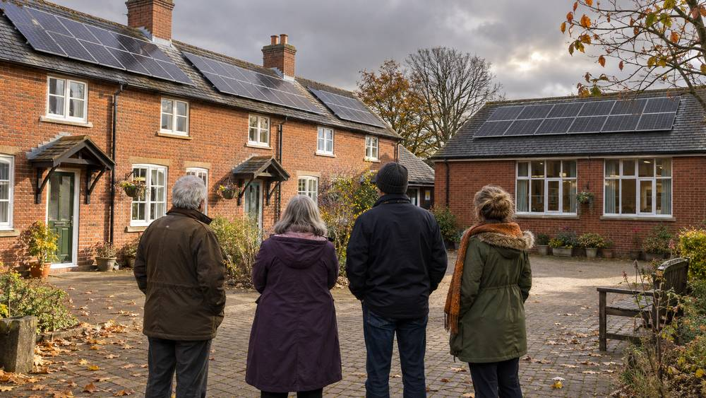
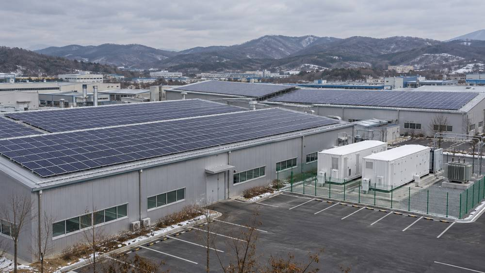
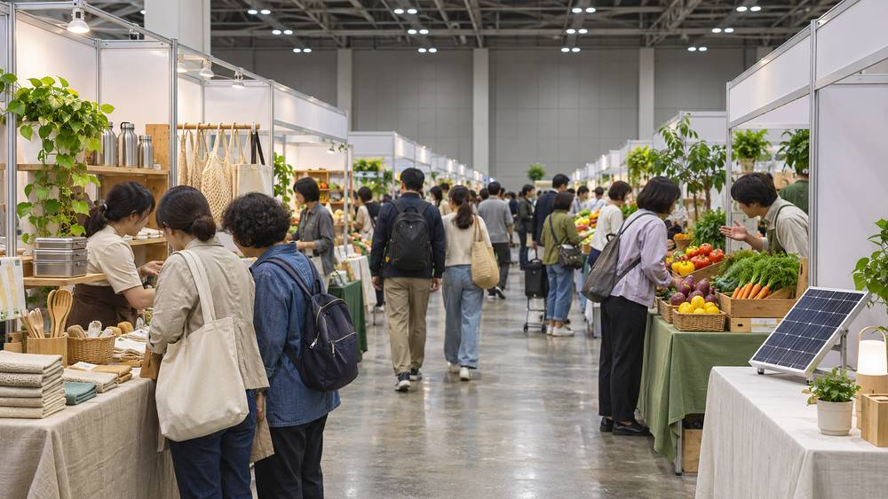
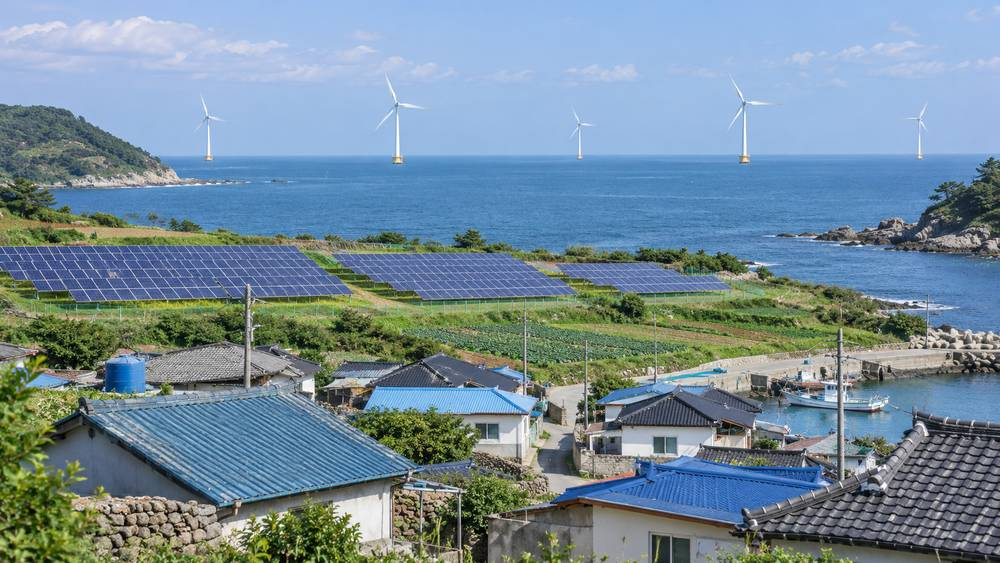
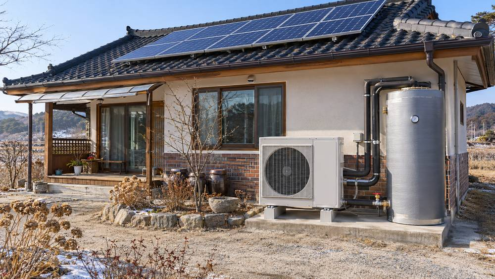
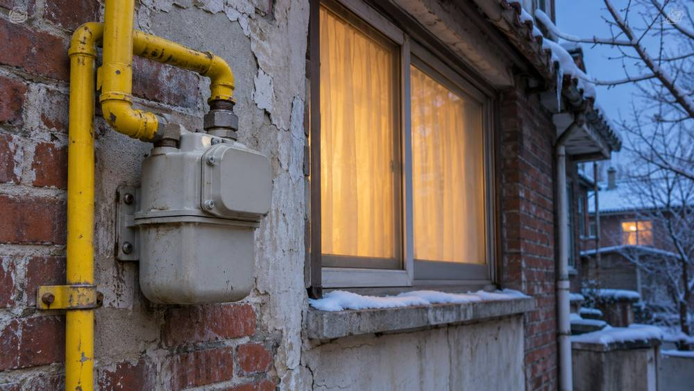
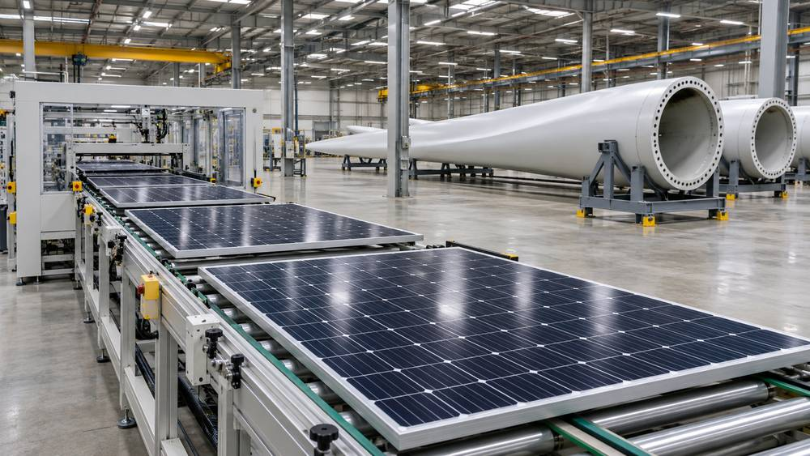
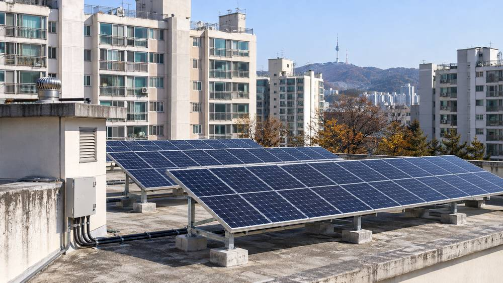

산업·경제
ESS 3차 입찰 14곳 1,194MW, 2차의 두 배
전남 6곳·전북 5곳·충남 1곳·제주 2곳이 우선협상 대상이다. 최종 물량은 12월 4일 확정되고, 설비는 2029년 2월까지 지어야 한다.

영국 공동체에너지 투자 19% 줄어…359MW 멈춰
잉글랜드·스코틀랜드·웨일스 공동체에너지 단체가 낸 2026년 현황 보고서다. 660개 단체 조합원 8만9,023명이 발전 설비 452MW를 운영한다.

재생에너지 계약시장 고시안, 11월 27일 설명회서 공개
2027년 1월 RPS를 경쟁입찰 계약시장으로 바꾸기에 앞서 기후에너지환경부가 고시 초안을 내놓는다. 현장 300석은 11월 24일부터 신청받는다.

새만금 RE100 태양광 30MW 세 번째 사업자 공모
새만금개발공사가 11월 30일 하루 제안서를 받는다. 공사가 특수목적법인 지분을 최대 29.9%까지 갖고, 전기는 입주기업에 직접 PPA로 판다.

충주제1산단 태양광 14MW·ESS 구축에 345억 원
충북테크노파크가 주관해 2029년 12월까지 입주기업 20곳 설비 교체도 돕는다. 국비 200억 원, 민간 115억5,900만 원이 들어간다.

사회연대경제박람회 27일 킨텍스, 기본법 뒤 첫 전국 행사
11월 27~29일 고양 킨텍스에서 열리고 관람은 무료다. 사전등록은 11월 26일까지, 첫날엔 한국사회연대금융협회 창립총회도 열린다.

경남 채소화훼연구소 전기요금 72% 올라 식물공장 멈춰
연구소 산업용(을) 단가가 kWh당 105.5원에서 181.9원으로 오를 때 운영비는 7.3% 줄었다. 경남도의회가 19일 추경 심사에서 따졌다.

용인 시민 햇빛펀드 수익 환원, 시의회 행감서 점검 주문
용인특례시의회 경제환경위가 18일 감사에서 태양광 허가 자진 반납과 고령층 투자 피해, 중단된 에너지자립마을, 공영주차장 태양광 의무 설치를 따졌다.

수원햇빛발전 시민펀드, 배당 목표 연 5~8%
수원 공공주차장 20MW 태양광 회사 설명회가 11월 16일 시의회에서 열렸다. 수원도시공사가 45%를 내고 조합·지역기업이 20~30%씩 출자하는 안이다.

서남권투자공사 법안, 주민·지역 조합도 출자 길 연다
안도걸 의원 등 10명이 낸 제정안으로, 정부·산업은행 등이 자본금 5조 원 공사를 세우고 서남권 주민·조합 출자와 배당 공개를 정했다. 공포 1년 뒤 시행.

난방전기화 히트펌프 3차 제품 선정, 12월 2일 마감
기후에너지환경부가 제조사 신청을 받는다. 국내 공장 조립에 최대 10점을 주고 80점 이상인 제품만 고르며, 1대 최대 1,400만 원 보조사업에 쓰인다.

도시가스요금 경감, 실거주지 신청 길 열고 한도 1년 연장
산업통상부 개정안대로면 수급자·차상위계층은 12월 11일부터 실제 사는 집으로도 신청한다. 겨울 월 최대 14만8,000원 한도는 2027년 11월까지 간다.

재생에너지 기자재 관세 경감, 2029년까지 연장 법안
배준영 의원 등 13명이 낸 조세특례제한법 개정안으로, 전기·수소 시내버스 부가세 면제도 2030년까지 늘린다. 입법예고는 11월 19일까지다.

태양광·풍력 국내생산세액공제 한도 2배 법안
임호선 의원 등 11명이 낸 조세특례제한법 개정안으로, 비수도권 우대지역 생산분은 공제액을 1.5배로 쳐 준다. 입법예고는 11월 22일까지다.

체코 원전 시공사 교체 속 산업부 두 번째 점검회의…한수원, 새 시공사 선정까지 주 단위 일정 보고
11월 셋째 주까지 계획대로 진행했다고 설명 / 12월 10일 한국서 제4차 한·체코 장관급 두코바니 이행점검 협의체

수자원공사, 50여 개 기관과 수상태양광 협의체 출범…2030년까지 10곳 500MW 개발
정책제언·기술시공·기자재 3개 분과, 반기마다 정기회의 / 첫 안건은 수상구조물 성능·평가 기준

충남도, 수출 중소기업 탄소 배출량 산정·검증 돕는 전담조직 가동…철강·알루미늄부터
행정부지사 단장, 행정·기업·측정보고검증·정책자문 4개 분야 / 유럽연합 탄소국경조정제도 올해 1월 본격 시행, 12월까지 도 지원 전략

지역 중소·중견기업 보증부 대출 4조5,000억 원, 시·도 공모 성적 따라 나눈다
1차 13개 시·도에 3조7,400억 원…최우수 3곳 3,800억 원씩 / 11월 2일 발표보다 등급별 금액 줄고 7,600억 원은 2차 초광역 공모로

충남 사회적경제기금, 90억 원 융자에서 임팩트투자로 넓힌다
한국사회가치연대기금과 11월 17일 협약…민간기금·지역 금융중개기관·기후에너지 분야 금융 / 「사회연대경제기본법」 2027년 3월 16일 시행

[부산형 햇빛소득②] 기업 PPA로는 수익률 2%대…"부산시가 전기 사서 배출권 비용 아끼자"
부산연구원 "고정가격 상한 150원 아래, 주차장 태양광은 145원에 팔면 원금도 못 건져" / 부산시 배출권 구매비 7억 원대서 20억 원 넘게…시가 PPA 구매자 되면 IRR 5% 넘어 / 전력거래소 "직접 PPA 300kW 이상 고압 요건 완화 검토" / 자유토론서 "협동조합에 맡겨 달라"…선로 1.4km·부서 칸막이 지적


철원·화천 군의원, 접경지역 정책포럼서 영농형 태양광 군민펀드 제안
철원 농지 약 60% 외지인 소유 우려…화천은 군 유휴 추정부지 약 1,087만㎡ 활용 특례 확대 제안


테네시 태양광 단지에서 소 15마리가 풀베기 75% 맡아…설비 보강비는 3% 더 들어
3.25MW 크리스티애나 단지, 패널 기울기를 20~30도로 묶는 '방목 모드' 적용…전기는 지역 전력회사가 TVA 도매 요금보다 싸게 산다

독일 생태경제연구소, 에너지협동조합 여성 참여 걸림돌 짚은 정책제안서 발간
쉬운 말·다양한 이미지·분명한 참여 방식 권고, 밤베르크 조합은 활동 쉼 허용·하이브리드 회의, 브레멘 조합은 감사회 체험 프로그램 운영

서울시의회 오중석 의원, SH 임대단지 태양광 요금상계 현황 공개 요구
LH는 세종 행복주택 238가구에서 요금상계를 시작했고 SH 고덕 온빛채 697가구는 제로에너지건축물 3등급 단지다

위스콘신 민간 전력회사 가정용 요금 2020년 뒤 29% 상승…시 공영 14%·협동조합 15%
연 8,000kWh 사용 가구로 계산하면 시 공영 전력이 민간보다 488달러 적어

셰틀랜드 의회, 송전 막혀 버려지는 풍력 전기를 주민 요금에 쓰는 방안 조사 착수
가구 40%가 에너지빈곤인데 터빈 103기 풍력단지는 송전이 막히면 전기를 내보내지 못해…SSE·오프젬·GB에너지 참여, 빨라야 2028년 시범 운영 목표

독일 쾰른 오센도르프 435가구에 지붕 태양광 전기 공급…지역 기본공급 요금보다 18% 싸게
협동조합 두 곳이 건물 55동 지붕에 태양광 750kW와 저장장치 670kWh를 설치하고 9월 15일 개소식, 전 건물 가동은 연말까지